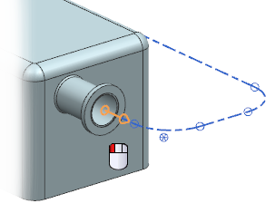

您需要在从子站 1连接至子站 2的路径的起点和终点处添加管线法兰，但是在您开始之前，您应该查看其中一个子站上的端口特性，以便您知道添加到管线中的接头尺寸。
选择信息→管线布置→管线布置对象。
选择子站 2上的端口。

(您可能需要从快速拾取对话框中选择端口)
点击确定。
滚动至信息窗口的底部。
----------------------------- 端口特性 NPS = 200 (整数) SPOOL_DELIMITER = 0 (整数) UNIQUE_ID = (字符串)
根据这个端口的对象，您需要在这个管道通路中放置 NPS 200 法兰。
关闭信息窗口。